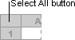

To use bulk update:
- Either:
- Click
 and click
and click  .
.
Or:
- Click and click
 to update all records in the current browse.
to update all records in the current browse.
NOTE
If you are using Office 2007, you may get a message telling you the file you are trying to open is in a different format from the file extension:
If so, click Yes to open the file.
- Make any changes to the data in the Excel window.
NOTES
- Cells with a
- The final two columns show the time the record was last updated and the database ID. Do not change these since they are used for checking when putting the record back. If you do, the update will fail.
- Cells with a
- Select all the data in the Excel window, including the column headings. Either:
- Press Ctrl+A then Ctrl+C.
- Click the Select All button, then choose Copy from the Edit menu.
 - Paste the data into the large input field in

- Click
 .
.
To use bulk add:
- Click and click
 .
. -
- Enter the data you want to add in the Excel window.
NOTE
- Column labels with
- If you already have the transactions in a spreadsheet, you can copy them into the Excel window. Make sure you get the data in the correct columns!
- Column labels with
- Select all the data in the Excel window, including the column headings. Either:
- Press Ctrl+A then Ctrl+C.
- Click the Select All button, then choose Copy from the Edit menu.
- Paste the data into the large input field in
- Click .
To use bulk copy:
-
- Click and click
 .
.
- Make any changes to the records in the Excel window.
NOTES
Cells with a - Select all the data in the Excel window, including the column headings. Either:
- Press Ctrl+A then Ctrl+C.
- Click the Select All button, then choose Copy from the Edit menu.
- Paste the data into the large input field in
- Click .